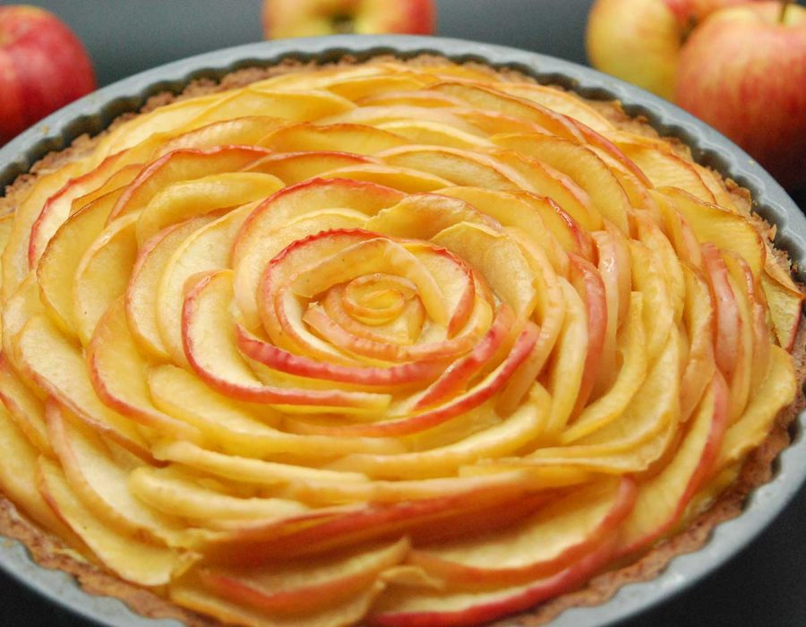

Tarta de Manzana Creativa
Mi versión de la tarta de siempre, ¡con una cobertura súper crujiente!

¡Hola! Soy Judith
Me encanta la tarta de manzana que hace mamá, pero un día le dije: "¿Y si le ponemos algo que haga 'croc' por encima?". ¡Y así nació esta receta! Es la combinación perfecta: la suavidad de las manzanas cocidas y el crujiente dulce del crumble. Es súper fácil de hacer y es mi postre favorito para los domingos. ¡Espero que te guste tanto como a mí!
Ingredientes
Para el relleno:
- 4-5 manzanas grandes (tipo Golden o Reineta)
- 50g de azúcar moreno
- 1 cucharadita de canela en polvo
- Una pizca de nuez moscada
- El zumo de medio limón
Para el crumble crujiente:
- 150g de harina de trigo
- 100g de azúcar moreno
- 100g de mantequilla fría, en cubos
- 50g de copos de avena (¡el truco!)
- Una pizca de sal
Paso a Paso
- Prepara el horno y el molde: Precalienta el horno a 180°C. Engrasa un molde redondo de unos 22-24 cm.
- Manzanas listas: Pela las manzanas, quítales el corazón y córtalas en láminas o dados. Ponlas en un bol grande y añade el zumo de limón para que no se pongan oscuras.
- Sazona el relleno: Añade al bol de las manzanas el azúcar moreno (50g), la canela y la nuez moscada. Mézclalo todo bien con las manos y extiende las manzanas en el fondo del molde.
- ¡A por el crumble!: En otro bol, mezcla la harina, el azúcar moreno (100g), los copos de avena y la pizca de sal.
- El paso divertido: Añade los cubos de mantequilla fría y, con la punta de los dedos, ve "pellizcando" la mezcla hasta que parezca arena mojada con algunos trocitos más grandes. ¡No lo mezcles demasiado!
- Cubre y hornea: Reparte la mezcla del crumble por encima de las manzanas de manera uniforme. Hornea durante 45-50 minutos, o hasta que la cobertura esté dorada y las manzanas burbujeen.
- Paciencia... ¡casi!: Deja que la tarta se enfríe un poco antes de servirla. ¡Así no te quemarás la lengua!
El Consejo Creativo de Judith
¡Esta tarta está increíble si la sirves tibia con una bola de helado de vainilla por encima! El contraste del calor y el frío es lo más. También puedes añadir un puñado de nueces picadas a la mezcla del crumble si te gusta un toque extra crujiente.